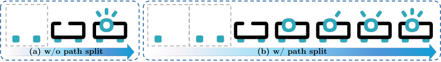
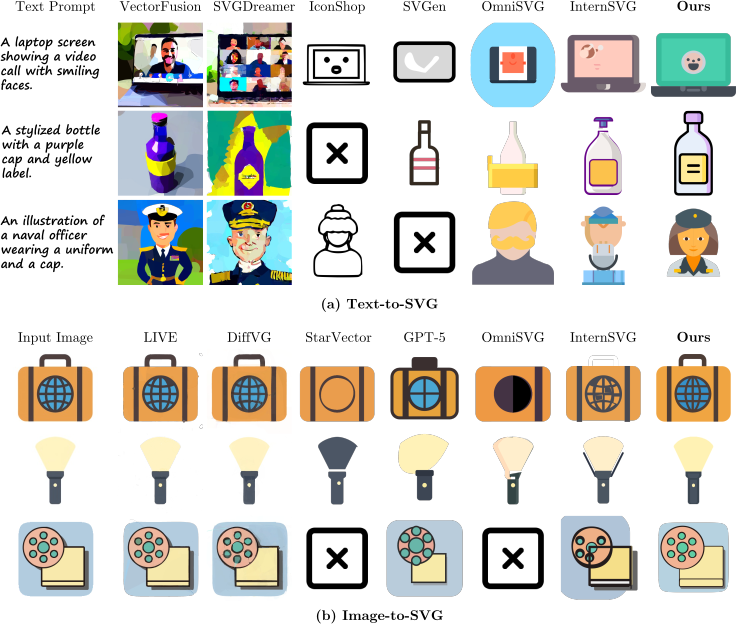
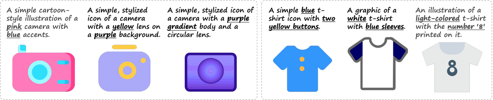
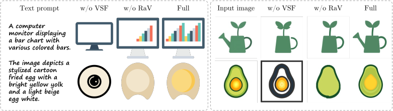

Abstract
Current autoregressive SVG generators often draw blindly: they produce symbolic code without seeing the visual effect of previous strokes. Render-in-the-Loop turns SVG synthesis into an interleaved visual-code process. The model observes the prompt, its generated SVG fragments, and the rendered intermediate canvas, enabling it to reason over geometry, layering, occlusion, and completion.
Visual Self-Feedback
Intermediate SVG states are rendered and fed back into the multimodal model as visual context for the next primitive.
Dense Drawing Trajectories
Fine-grained path decomposition converts static SVGs into multi-step drawing traces with richer visual supervision.
Render-and-Verify
The decoder filters visually stagnant or repetitive primitives, reducing degenerate loops and redundant over-drawing.
Method
We model SVG generation as a drawing session: prompt, code fragment, rendered canvas, next code fragment. This gives the MLLM a synchronized drawing hand and seeing eye.
Decompose
Split long SVG paths into visually meaningful components while preserving topology and fill semantics.
Condition on Canvas
Train the model to generate each next primitive from both the target condition and the current rendered state.
Verify
Render candidate primitives before accepting them, rejecting code with negligible visual contribution or repetition.

Results
On MMSVGBench, Render-in-the-Loop achieves strong Text-to-SVG and Image-to-SVG performance while using substantially less data than several large autoregressive baselines.
Icon FID
Text-to-SVG on MMSVG-Icon. Lower is better.Icon CLIP
Semantic alignment on MMSVG-Icon. Higher is better.Illust. SSIM
Image-to-SVG reconstruction on MMSVG-Illustration.Illust. LPIPS
Perceptual distance on MMSVG-Illustration. Lower is better.
Analysis
Visual feedback improves instruction following and completeness, while Render-and-Verify suppresses repetitive or visually empty drawing steps.


Gallery
The model generates diverse vector graphics with clean topology and editable structure across icons and illustrations.
Citation
Please consider citing our work if you find it useful.
@inproceedings{liang2026render,
title = {Render-in-the-Loop: Vector Graphics Generation via Visual Self-Feedback},
author = {Liang, Guotao and Wang, Zhangcheng and Hu, Juncheng and Zhou, Haitao and Xue, Ziteng and Zhang, Jing and Xu, Dong and Yu, Qian},
booktitle = {European Conference on Computer Vision (ECCV)},
year = {2026}
}